5 pdx setup
This portion is specifically for the Portland setup at Ground Kontrol.
5.1 facilities
Generally we need:
- A folding table
- A rug to cover the cables that run between the cabs and the table
- A power strip for all of the hardware
- A laptop with Thunderbolt support (moderately recent Macs have one or two).
Thunderbolt ports are physically compatible with Mini Display. Thunderbolt ports can accept a Mini Display port, but it doesn't go the other way around.
A nice to have is the Thunderbolt display. It's a monitor that connections via - wait for it - Thunderbolt. The display has a webcam, and is a rather large screen that the commentators can easily share. It also leaves the computer free for doing score management, enqueuing commercials or transitions, and managing other parts of the production. Right now the Thunderbolt Display is on loan from Day Logan.
5.2 hardware
5.2.1 video
HDMI is provided as an input source via a computer's Thunderbolt port (I need to check, but I'm pretty sure it's not mini display port). This runs from the video splitter to the laptop.
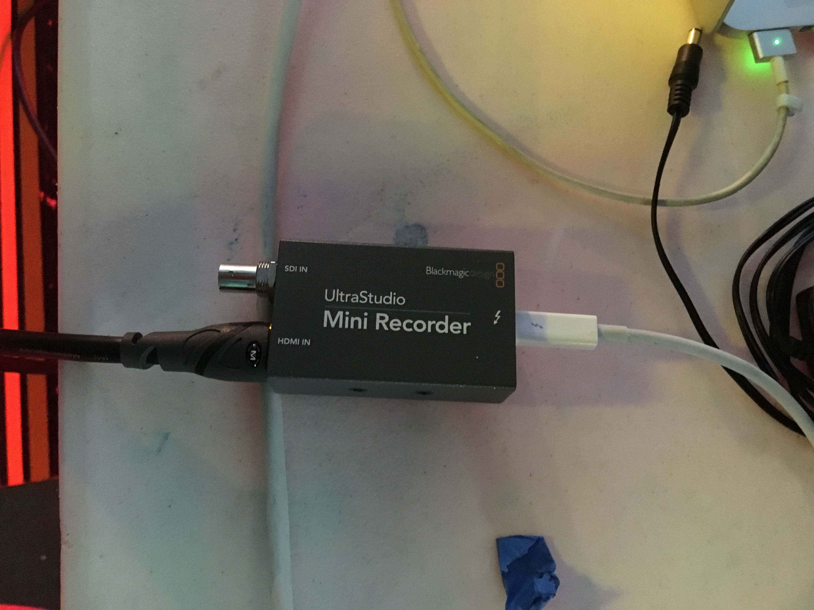
When the device is working, you'll see a white light near the Thunderbolt connection.
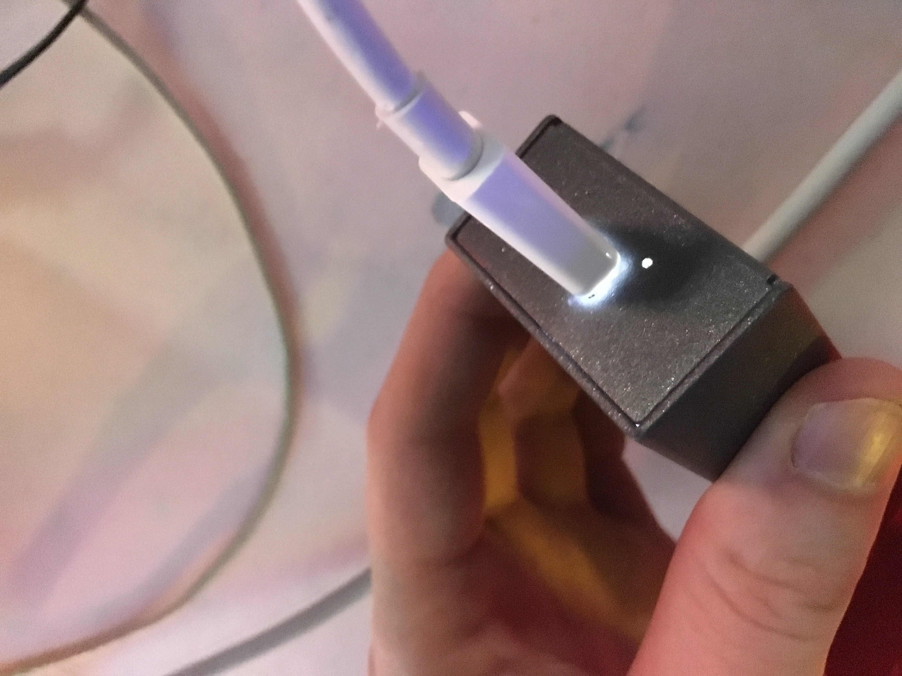
5.2.2 audio
Here's the amp as labeled in the diagram above:

We could use an image that's in focus…
The 4 channel mixer:
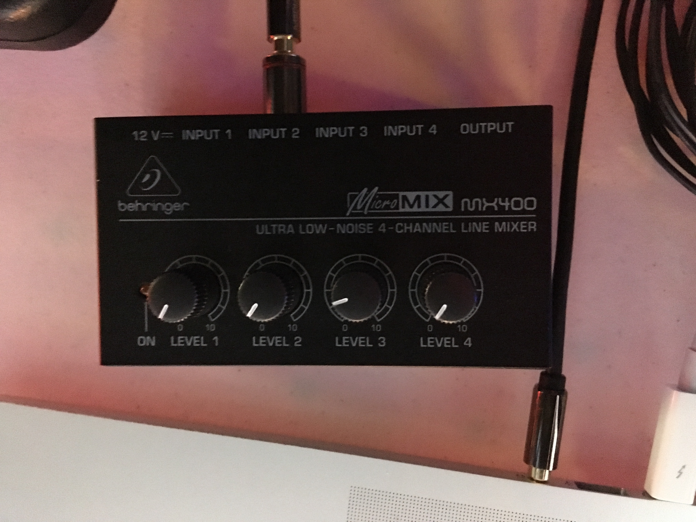
These devices appear to be very similar, but they are very different. Basically the mixer combines a series of inputs into a single output, and the amp splits a single input into a series of outputs.
The mic mixer:
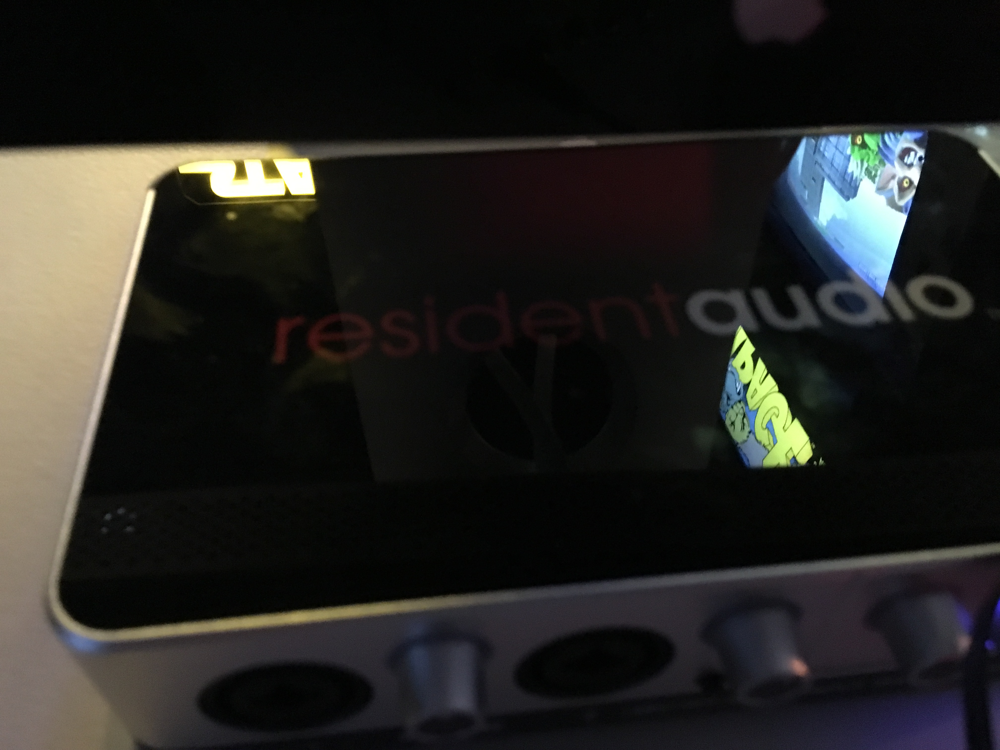
The mics connect directly to this.
5.2.3 all together now
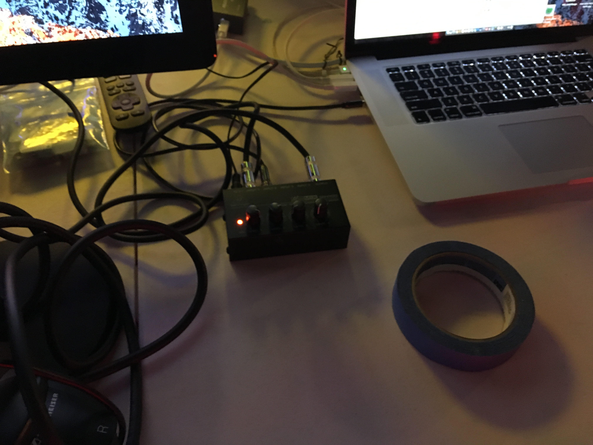
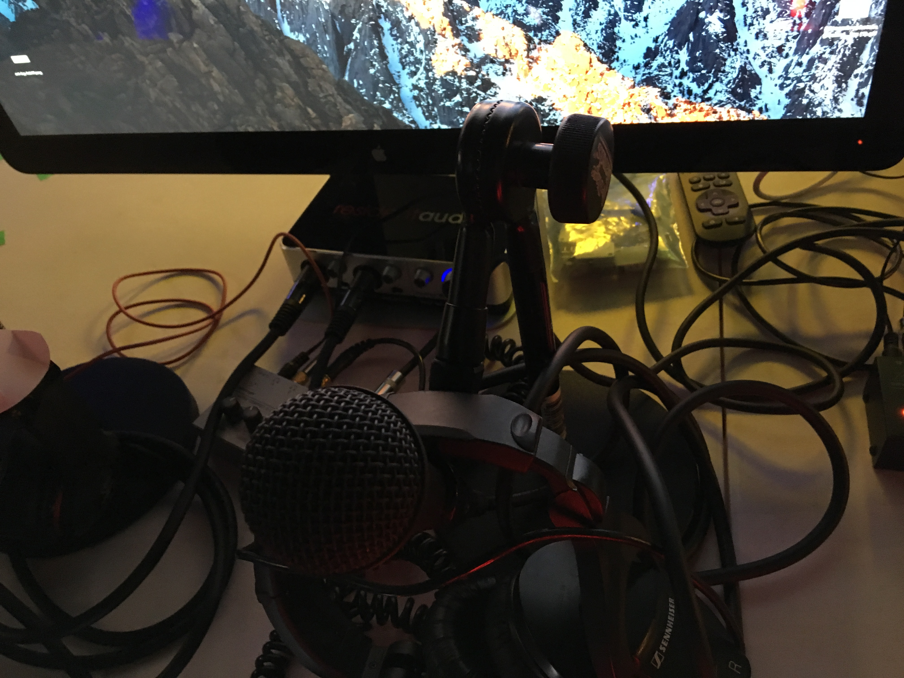
5.2.4 anti trip trick
Ground Kontrol has seats that have these glowing strips on their corners and sides.
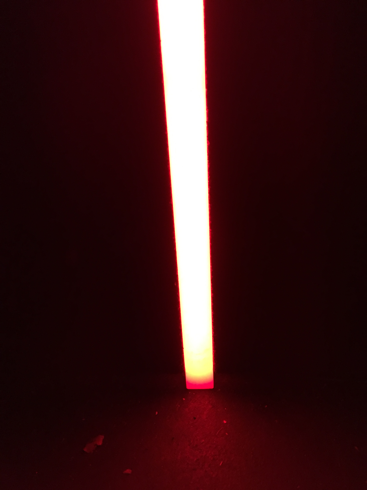
These strips slide up a little bit. There's a small channel between the strip and the side of the seats. You can stuff some of the cables you need to run (such as the cables for the webcams) into this channel. Here we've stuffed the cables in there as best we can with the strip still up.
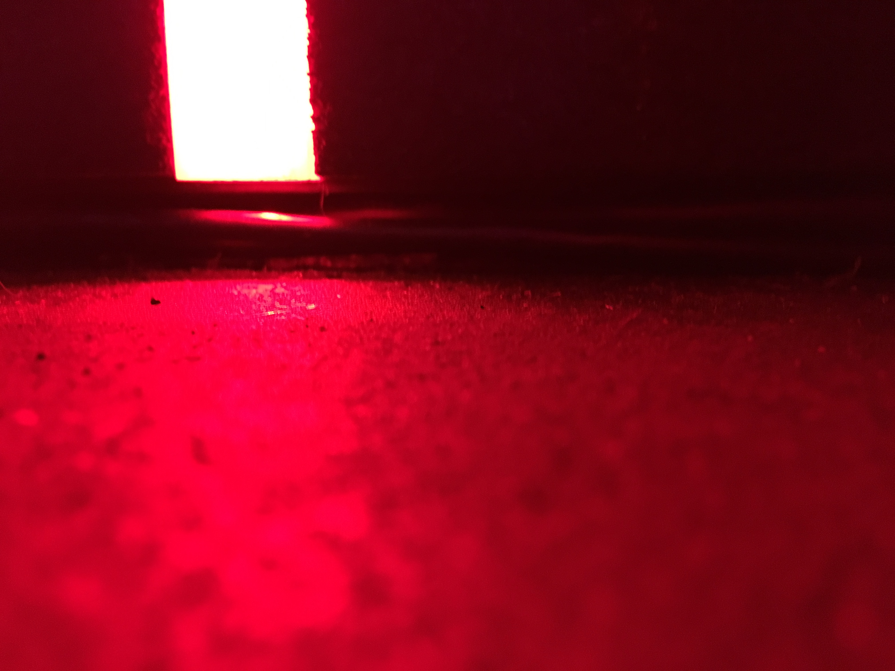
Once the cables are in place, we can slide the strip back down, and it will hold the cables in place well enough to prevent feet from kicking the cables out or other snares from occurring. Here's the closed version with cables inserted:
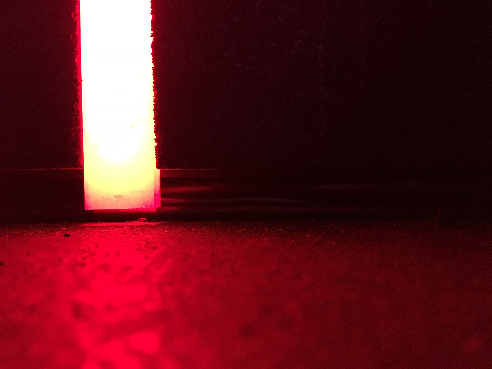
5.3 software
[[]]
5.3.1 challonge
The URL we use is in the format kqpdx<MMDDYY>, where MM is the number of the
month, DD the day of the month, and YY is the last two digits of the year.
If today's date is , the URL will be kqpdx113017.
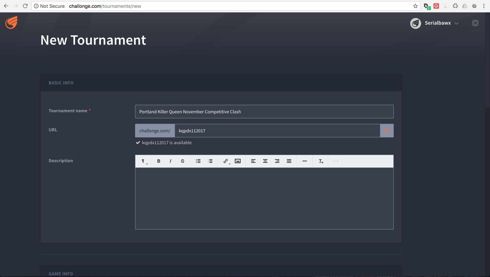
Here's a list of things to clicky or type:
- Game: killer queen
- Single Stage Tournament
- Double Elimination
- 1-2 Matches
- Provide a list of participants
- Save and Continue
Example:
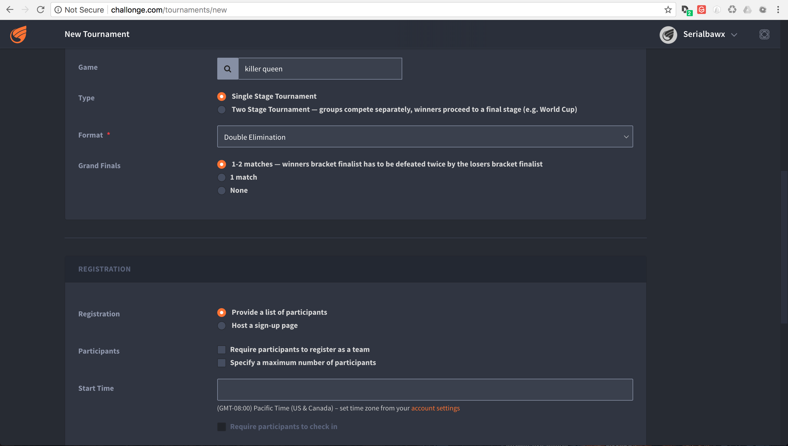
5.3.2 kq-tournament
- installation
Much of this is covered in the repo's
README.md. This assumes running on MacOS or Linux. Windows is probably doable, but that's beyond the scope of this document short of someone else's contribution.All of the instructions below assume you're running out of a terminal. On MacOS, you can run
Terminal.appfor this.Your environment needs the following:
rbenvorrvmso you can get on Ruby 2.2.3.- Postgres 9.4.5.0 (greater will probably work, but the
9is likely important. - The
bundlergem installed globally. git- A Github account for cloning the repository.
- Your public ssh key uploaded to github so you can clone the repository.
TODO: Open source the repository. Matt Wire has generously agreed to do this, but it needs a little cleanup.
Clone the repository with git, and then
cdinto it.git clone git@github.com:boxofmattwire/kq-tournament.git cd kq-tournament
Here's an example
database.yml. This should go inconfig/database.yml. Note thatusernameandpasswordis left out. You can add these in if you have accounts setup on your PostgreSQL server. The stock setup from Homebrew allows local connections with no credentials.development: adapter: postgresql database: kqt_dev pool: 5 timeout: 5000 encoding: utf8 test: adapter: postgresql database: kqt_test pool: 5 timeout: 5000 encoding: utf8
This creates the file for you:
echo " development: adapter: postgresql database: kqt_dev pool: 5 timeout: 5000 encoding: utf8 test: adapter: postgresql database: kqt_test pool: 5 timeout: 5000 encoding: utf8 " > config/database.yml
Install all of the gems the repo uses.
bundle install
Assuming a Homebrew installed postgres, the database server is started like so:
pg_ctl -D /usr/local/var/postgres start
It can be shut down with:
pg_ctl -D /usr/local/var/postgres stop
Create the initial database and its tables.
bundle exec rake db:create db:migrate
- running
Once you have everything setup and the database server is running:
bundle exec rails server
- stopping
Hold
Ctrland pressC. This will return you to your normal shell prompt.Then shut down the database server:
pg_ctl -D /usr/local/var/postgres stop
- operating
5.3.3 OBS
OBS (pronounced "awbz", short for Open Broadcaster Software) is what we use to do streaming. Setting up streaming to Twitch is pretty simple with OBS. All that's required is an API Key from Ground Kontrol. The API key is secret so it shouldn't be published anywhere. This means you have to talk to staff or ownership at Ground Kontrol in order to get it.
We still need to get a list of contacts that can provide the key.